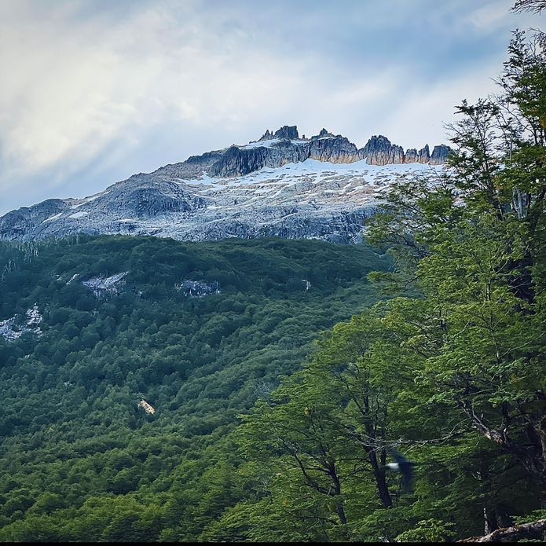
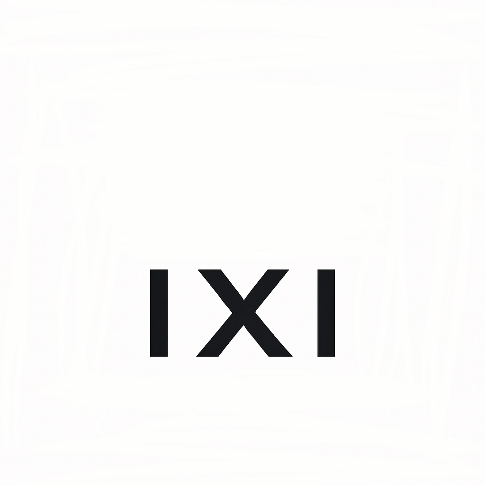

Proyecto artístico independiente de Argentina.

Soy IXI (IXI B), un artista de indie rock de Argentina. Soy bajista en Vinilo en Blanco y productor #indieargentino #indierock #bandaemergente #latinmusic.
Este proyecto solista nace de la necesidad de un lugar de expresión en el año 2018 en Villa Regina, Río Negro. Combina sonidos de rock moderno, indierock, pop, trap y música electrónica. Compuesto y producido por IXI.


IXI nació como idea en 2018, justo después de la separación de mi banda anterior, Vinilo en Blanco. A mis 21 años, sentí la necesidad de encontrar un medio de expresión propio, y una nueva identidad,pero nunca me sentí completamente listo para mostrarlo al mundo. Durante años, IXI permaneció en gestación, un laboratorio personal donde exploraba sonidos y emociones hasta encontrar la voz auténtica que hoy define el proyecto.
El sonido de IXI B combina rock moderno con capas electrónicas y atmósferas chill, creando un espacio donde la música respira y evoluciona libremente. No hay reglas ni etiquetas fijas; cada canción es un experimento, un reflejo de mi búsqueda constante por un lenguaje propio.
Lo que impulsa IXI es la idea de expresarse sin miedo, sin importar nada más. Cada nota y cada atmósfera son un acto de autenticidad, un recordatorio de que a veces el gesto más puro es simplemente hacer ruido y dejarse sentir, sin filtros ni límites.
Tras años de preparación, IXI finalmente empezó a tomar forma en 2024, listo para compartir su mundo musical. Es un proyecto que sigue creciendo, invitando a quienes escuchan a explorar, sentir y dejarse llevar por la música como un espacio seguro para la expresión y la experimentación.
(2019) Irse se trata de volver (Demo) No disponible
(2025) Irse se trata de volver (A UNO MISMO) (Single)
Web en desarrollo by ixi.
IXI ® – Marca registrada (INPI)